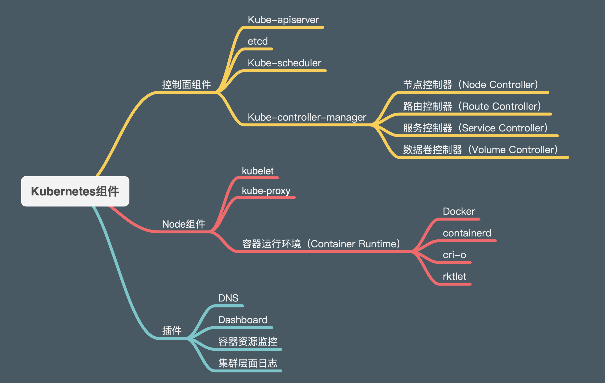

<!DOCTYPE html>
<html lang="en">

<head>
  <meta charset="utf-8" />
   
  <meta name="keywords" content="生活,旅行,思考,代码,博客" />
   
  <meta name="description" content="一座孤岛" />
  
  <meta name="viewport" content="width=device-width, initial-scale=1, maximum-scale=1" />
  <title>
    k8s学习笔记-1 概述 |  akaQin&#39;s Blog
  </title>
  <meta name="generator" content="hexo-theme-yilia-plus">
  
  <link rel="shortcut icon" href="/favicon.ico" />
  
  
<link rel="stylesheet" href="/css/style.css">

  
<script src="/js/pace.min.js"></script>


  

  

<link rel="alternate" href="/atom.xml" title="akaQin's Blog" type="application/atom+xml">
</head>

</html>

<body>
  <div id="app">
    <main class="content">
      <section class="outer">
  <article id="post-k8s学习笔记-1 概述" class="article article-type-post" itemscope
  itemprop="blogPost" data-scroll-reveal>

  <div class="article-inner">
    
    <header class="article-header">
       
<h1 class="article-title sea-center" style="border-left:0" itemprop="name">
  k8s学习笔记-1 概述
</h1>
  

    </header>
    

    
    <div class="article-meta">
      <a href="/2020/06/06/k8s%E5%AD%A6%E4%B9%A0%E7%AC%94%E8%AE%B0-1%20%E6%A6%82%E8%BF%B0/" class="article-date">
  <time datetime="2020-06-06T04:25:18.000Z" itemprop="datePublished">2020-06-06</time>
</a>
      
      
      
<div class="word_count">
    <span class="post-time">
        <span class="post-meta-item-icon">
            <i class="ri-quill-pen-line"></i>
            <span class="post-meta-item-text"> 字数统计:</span>
            <span class="post-count">4.5k字</span>
        </span>
    </span>

    <span class="post-time">
        &nbsp; | &nbsp;
        <span class="post-meta-item-icon">
            <i class="ri-book-open-line"></i>
            <span class="post-meta-item-text"> 阅读时长≈</span>
            <span class="post-count">16分钟</span>
        </span>
    </span>
</div>

      
    </div>
    

    
    
    <div class="tocbot"></div>


    

    
    <div class="article-entry" itemprop="articleBody">
      


      

      
      <p><strong>前言</strong></p>
<blockquote>
<p>今天开始将开一个系列的新坑：把k8s的学习心得整理成笔记。内容源自<a href="https://kubernetes.io/zh/docs/home/" target="_blank" rel="noopener">k8s官方文档</a>、<a href="https://kubernetes.feisky.xyz/" target="_blank" rel="noopener">Kubernetes指南</a>、<a href="https://jimmysong.io/kubernetes-handbook/" target="_blank" rel="noopener">Kubernetes Handbook</a>以及我自己整理的一些思维导图，这三个文档都是对于学习k8s来说非常优秀的学习资料，我将它们进行简化整合，砍掉一些冗长的细枝末节，方便刚入门的新手学习理解，如有错误欢迎指正。</p>
</blockquote>
<br/>
# 概述

<hr>
<h2 id="简介"><a href="#简介" class="headerlink" title="简介"></a>简介</h2><h3 id="Kubernetes是什么？"><a href="#Kubernetes是什么？" class="headerlink" title="Kubernetes是什么？"></a>Kubernetes是什么？</h3><p><code>Kubernetes</code>是一个可移植的、可扩展的开源平台，用于管理容器化的工作负载和服务，可促进声明式配置和自动化。Kubernetes 拥有一个庞大且快速增长的生态系统。Kubernetes 的服务、支持和工具广泛可用。</p>
<blockquote>
<p>名称 Kubernetes 源于希腊语，意为 “舵手” 或 “飞行员”。Google 在 2014 年开源了 Kubernetes 项目。Kubernetes 建立在 Google 在大规模运行生产工作负载方面拥有十几年的经验的基础上，结合了社区中最好的想法和实践。</p>
</blockquote>
<a id="more"></a>

<h3 id="历史"><a href="#历史" class="headerlink" title="历史"></a>历史</h3><p></p>
<p><strong>传统部署时代：</strong> 早期，组织在物理服务器上运行应用程序。无法为物理服务器中的应用程序定义资源边界，这会导致资源分配问题。例如，如果在物理服务器上运行多个应用程序，则可能会出现一个应用程序占用大部分资源的情况，结果可能导致其他应用程序的性能下降。一种解决方案是在不同的物理服务器上运行每个应用程序，但是由于资源利用不足而无法扩展，并且组织维护许多物理服务器的成本很高。</p>
<p><strong>虚拟化部署时代：</strong> 作为解决方案，引入了虚拟化功能，它允许您在单个物理服务器的 CPU 上运行多个虚拟机（VM）。虚拟化功能允许应用程序在 VM 之间隔离，并提供安全级别，因为一个应用程序的信息不能被另一应用程序自由地访问。</p>
<p>因为虚拟化可以轻松地添加或更新应用程序、降低硬件成本等等，所以虚拟化可以更好地利用物理服务器中的资源，并可以实现更好的可伸缩性。</p>
<p>每个 VM 是一台完整的计算机，在虚拟化硬件之上运行所有组件，包括其自己的操作系统。</p>
<p><strong>容器部署时代：</strong> 容器类似于 VM，但是它们具有轻量级的隔离属性，可以在应用程序之间共享操作系统（OS）。因此，容器被认为是轻量级的。容器与 VM 类似，具有自己的文件系统、CPU、内存、进程空间等。由于它们与基础架构分离，因此可以跨云和 OS 分发进行移植。</p>
<p>容器因具有许多优势而变得流行起来。下面列出了容器的一些好处：</p>
<ul>
<li>敏捷应用程序的创建和部署：与使用 VM 镜像相比，提高了容器镜像创建的简便性和效率。</li>
<li>持续开发、集成和部署：通过快速简单的回滚(由于镜像不可变性)，提供可靠且频繁的容器镜像构建和部署。</li>
<li>关注开发与运维的分离：在构建/发布时而不是在部署时创建应用程序容器镜像，从而将应用程序与基础架构分离。</li>
<li>可观察性不仅可以显示操作系统级别的信息和指标，还可以显示应用程序的运行状况和其他指标信号。</li>
<li>跨开发、测试和生产的环境一致性：在便携式计算机上与在云中相同地运行。</li>
<li>云和操作系统分发的可移植性：可在 Ubuntu、RHEL、CoreOS、本地、Google Kubernetes Engine 和其他任何地方运行。</li>
<li>以应用程序为中心的管理：提高抽象级别，从在虚拟硬件上运行 OS 到使用逻辑资源在 OS 上运行应用程序。</li>
<li>松散耦合、分布式、弹性、解放的微服务：应用程序被分解成较小的独立部分，并且可以动态部署和管理 - 而不是在一台大型单机上整体运行。</li>
<li>资源隔离：可预测的应用程序性能。</li>
<li>资源利用：高效率和高密度。</li>
</ul>
<h3 id="为什么需要-Kubernetes，它能做什么？"><a href="#为什么需要-Kubernetes，它能做什么？" class="headerlink" title="为什么需要 Kubernetes，它能做什么？"></a>为什么需要 Kubernetes，它能做什么？</h3><p>容器是打包和运行应用程序的好方式。在生产环境中，您需要管理运行应用程序的容器，并确保不会停机。例如，如果一个容器发生故障，则需要启动另一个容器。如果系统处理此行为，会不会更容易？</p>
<p>这就是 Kubernetes 的救援方法！Kubernetes 为您提供了一个可弹性运行分布式系统的框架。Kubernetes 会满足您的扩展要求、故障转移、部署模式等。例如，Kubernetes 可以轻松管理系统的 Canary 部署。</p>
<p>Kubernetes 为您提供：</p>
<ul>
<li><strong>服务发现和负载均衡</strong><br>Kubernetes 可以使用 DNS 名称或自己的 IP 地址公开容器，如果到容器的流量很大，Kubernetes 可以负载均衡并分配网络流量，从而使部署稳定。</li>
<li><strong>存储编排</strong><br>Kubernetes 允许您自动挂载您选择的存储系统，例如本地存储、公共云提供商等。</li>
<li><strong>自动部署和回滚</strong><br>您可以使用 Kubernetes 描述已部署容器的所需状态，它可以以受控的速率将实际状态更改为所需状态。例如，您可以自动化 Kubernetes 来为您的部署创建新容器，删除现有容器并将它们的所有资源用于新容器。</li>
<li><strong>自动二进制打包</strong><br>Kubernetes 允许您指定每个容器所需 CPU 和内存（RAM）。当容器指定了资源请求时，Kubernetes 可以做出更好的决策来管理容器的资源。</li>
<li><strong>自我修复</strong><br>Kubernetes 重新启动失败的容器、替换容器、杀死不响应用户定义的运行状况检查的容器，并且在准备好服务之前不将其通告给客户端。</li>
<li><strong>密钥与配置管理</strong><br>Kubernetes 允许您存储和管理敏感信息，例如密码、OAuth 令牌和 ssh 密钥。您可以在不重建容器镜像的情况下部署和更新密钥和应用程序配置，也无需在堆栈配置中暴露密钥。</li>
</ul>
<h3 id="Kubernetes-不是什么"><a href="#Kubernetes-不是什么" class="headerlink" title="Kubernetes 不是什么"></a>Kubernetes 不是什么</h3><p>Kubernetes 不是传统的、包罗万象的 PaaS（平台即服务）系统。由于 Kubernetes 在容器级别而不是在硬件级别运行，因此它提供了 PaaS 产品共有的一些普遍适用的功能，例如部署、扩展、负载均衡、日志记录和监视。但是，Kubernetes 不是单一的，默认解决方案是可选和可插拔的。Kubernetes 提供了构建开发人员平台的基础，但是在重要的地方保留了用户的选择和灵活性。</p>
<p>Kubernetes：</p>
<ul>
<li>Kubernetes 不限制支持的应用程序类型。Kubernetes 旨在支持极其多种多样的工作负载，包括无状态、有状态和数据处理工作负载。如果应用程序可以在容器中运行，那么它应该可以在 Kubernetes 上很好地运行。</li>
<li>Kubernetes 不部署源代码，也不构建您的应用程序。持续集成(CI)、交付和部署（CI/CD）工作流取决于组织的文化和偏好以及技术要求。</li>
<li>Kubernetes 不提供应用程序级别的服务作为内置服务，例如中间件（例如，消息中间件）、数据处理框架（例如，Spark）、数据库（例如，mysql）、缓存、集群存储系统（例如，Ceph）。这样的组件可以在Kubernetes 上运行，并且/或者可以由运行在 Kubernetes 上的应用程序通过可移植机制（例如，开放服务代理）来访问。</li>
<li>Kubernetes 不指定日志记录、监视或警报解决方案。它提供了一些集成作为概念证明，并提供了收集和导出指标的机制。</li>
<li>Kubernetes 不提供或不要求配置语言/系统（例如 jsonnet），它提供了声明性 API，该声明性 API 可以由任意形式的声明性规范所构成。</li>
<li>Kubernetes 不提供也不采用任何全面的机器配置、维护、管理或自我修复系统。</li>
<li>此外，Kubernetes 不仅仅是一个编排系统，实际上它消除了编排的需要。编排的技术定义是执行已定义的工作流程：首先执行 A，然后执行 B，再执行 C。相比之下，Kubernetes 包含一组独立的、可组合的控制过程，这些过程连续地将当前状态驱动到所提供的所需状态。从 A 到 C 的方式无关紧要，也不需要集中控制，这使得系统更易于使用且功能更强大、健壮、弹性和可扩展性。</li>
</ul>
<h2 id="Kubernetes-组件"><a href="#Kubernetes-组件" class="headerlink" title="Kubernetes 组件"></a>Kubernetes 组件</h2><p>k8s运行在集群上。集群由一组被称作节点的机器组成。这些节点上运行 Kubernetes 所管理的容器化应用。集群最少由三个节点组成，其中至少一个工作节点和至少一个主节点。</p>
<p>工作节点托管作为应用程序组件的<code>Pod</code>。主节点管理集群中的工作节点和<code>Pod</code>。多个主节点用于为集群提供故障转移和高可用性。</p>
<p>下面这张图表展示了包含所有相互关联组件的<code>Kubernetes</code>集群：</p>
<p></p>
<p></p>
<h3 id="控制平面组件（Control-Plane-Components）"><a href="#控制平面组件（Control-Plane-Components）" class="headerlink" title="控制平面组件（Control Plane Components）"></a>控制平面组件（Control Plane Components）</h3><p>控制平面的组件对集群做出全局决策(比如调度)，以及检测和响应集群事件（例如，当不满足部署的 replicas 字段时，启动新的 pod）。</p>
<p>控制平面组件可以在集群中的任何节点上运行。然而，为了简单起见，设置脚本通常会在同一个计算机上启动所有控制平面组件，并且不会在此计算机上运行用户容器，这台计算机也就是所谓的<code>Master节点</code>。当这些组件运行在多个节点上时，也就实现了高可用。</p>
<ul>
<li><p>kube-apiserver<br>主节点上负责提供<code>Kubernetes API</code>服务的组件；它是 Kubernetes 控制面的前端。<br>kube-apiserver 在设计上考虑了水平扩缩的需要。 换言之，通过部署多个实例可以实现扩缩。 参见<a href="https://kubernetes.io/docs/admin/high-availability/" target="_blank" rel="noopener">构造高可用集群</a>。</p>
</li>
<li><p>etcd<br>etcd 是兼具一致性和高可用性的键值数据库，可以作为保存 Kubernetes 所有集群数据的后台数据库。<br>您的 Kubernetes 集群的 etcd 数据库通常需要有个备份计划。要了解 etcd 更深层次的信息，请参考 <a href="https://etcd.io/docs" target="_blank" rel="noopener">etcd 文档</a>。</p>
</li>
<li><p>kube-scheduler<br>主节点上的组件，该组件监视那些新创建的未指定运行节点的 Pod，并选择节点让 Pod 在上面运行。<br>调度决策考虑的因素包括单个 Pod 和 Pod 集合的资源需求、硬件/软件/策略约束、亲和性和反亲和性规范、数据位置、工作负载间的干扰和最后时限。</p>
</li>
<li><p>kube-controller-manager<br>在主节点上运行控制器的组件。<br>从逻辑上讲，每个控制器都是一个单独的进程，但是为了降低复杂性，它们都被编译到同一个可执行文件，并在一个进程中运行。<br>这些控制器包括:</p>
<ul>
<li>节点控制器（Node Controller）: 负责在节点出现故障时进行通知和响应。</li>
<li>副本控制器（Replication Controller）: 负责为系统中的每个副本控制器对象维护正确数量的 Pod。</li>
<li>端点控制器（Endpoints Controller）: 填充端点(Endpoints)对象(即加入 Service 与 Pod)。</li>
<li>服务帐户和令牌控制器（Service Account &amp; Token Controllers）: 为新的命名空间创建默认帐户和 API 访问令牌.</li>
</ul>
</li>
<li><p>云控制器管理器 (cloud-controller-manager)<br><code>cloud-controller-manager</code>运行与基础云提供商交互的控制器。cloud-controller-manager 二进制文件是 Kubernetes 1.6 版本中引入的 alpha 功能。</p>
</li>
</ul>
<h3 id="Node-组件"><a href="#Node-组件" class="headerlink" title="Node 组件"></a>Node 组件</h3><p>节点组件在每个节点上运行，维护运行的 Pod 并提供 Kubernetes 运行环境。</p>
<ul>
<li><p>kubelet<br>一个在集群中每个节点上运行的代理。它保证容器都运行在 Pod 中。<br>kubelet 接收一组通过各类机制提供给它的 PodSpecs，确保这些 PodSpecs 中描述的容器处于运行状态且健康。kubelet 不会管理不是由 Kubernetes 创建的容器。</p>
</li>
<li><p>kube-proxy<br>kube-proxy 是集群中每个节点上运行的网络代理,实现 Kubernetes Service 概念的一部分。<br>kube-proxy 维护节点上的网络规则。这些网络规则允许从集群内部或外部的网络会话与 Pod 进行网络通信。<br>如果操作系统提供了数据包过滤层并可用的话，kube-proxy会通过它来实现网络规则。否则，kube-proxy 仅转发流量本身。</p>
</li>
<li><p>容器运行环境(Container Runtime)<br>容器运行环境是负责运行容器的软件。<br>Kubernetes 支持多个容器运行环境: Docker、 containerd、cri-o、 rktlet 以及任何实现 Kubernetes CRI (容器运行环境接口)。</p>
</li>
</ul>
<h3 id="组件通信"><a href="#组件通信" class="headerlink" title="组件通信"></a>组件通信</h3><p>Kubernetes 多组件之间的通信原理为</p>
<ul>
<li>API Server 负责 etcd 存储的所有操作，且只有 API Server 才直接操作 etcd 集群</li>
<li>API Server 对内（集群中的其他组件）和对外（用户）提供统一的 REST API，其他组件均通过 API Server 进行通信<ul>
<li>Controller Manager、Scheduler、Kube-proxy 和 Kubelet 等均通过 API Server watch API 监测资源变化情况，并对资源作相应的操作</li>
<li>所有需要更新资源状态的操作均通过 API Server 的 REST API 进行</li>
</ul>
</li>
<li>API Server 也会直接调用 Kubelet API（如 logs, exec, attach 等），默认不校验 Kubelet 证书，但可以通过 <code>--kubelet-certificate-authority</code> 开启（而 GKE 通过 SSH 隧道保护它们之间的通信）</li>
</ul>
<p>比如典型的创建 Pod 的流程为:</p>
<p></p>
<ol>
<li>用户通过 REST API 创建一个 Pod</li>
<li>API Server 将其写入 etcd</li>
<li>Scheduluer 检测到未绑定 Node 的 Pod，开始调度并更新 Pod 的 Node 绑定</li>
<li>Kubelet 检测到有新的 Pod 调度过来，通过 Container Runtime 运行该 Pod</li>
<li>Kubelet 通过 Container Runtime 取到 Pod 状态，并更新到 API Server 中</li>
</ol>
<h3 id="插件-Addons"><a href="#插件-Addons" class="headerlink" title="插件(Addons)"></a>插件(Addons)</h3><p>插件使用 Kubernetes 资源 (DaemonSet, Deployment等) 实现集群功能。因为这些提供集群级别的功能，所以插件的命名空间资源属于 kube-system 命名空间。</p>
<p>所选的插件如下所述：有关可用插件的扩展列表，请参见<a href="https://kubernetes.io/docs/concepts/cluster-administration/addons/" target="_blank" rel="noopener">插件 (Addons)</a>。</p>
<ul>
<li><p>DNS<br>尽管并非严格要求其他附加组件，但所有示例都依赖集群 DNS，因此所有 Kubernetes 集群都应具有 DNS。<br>除了您环境中的其他 DNS 服务器之外，集群 DNS 还是一个 DNS 服务器，它为 Kubernetes 服务提供 DNS 记录。<br>Cluster DNS 是一个 DNS 服务器，和您部署环境中的其他 DNS 服务器一起工作，为 Kubernetes 服务提供DNS记录。<br>Kubernetes 启动的容器自动将 DNS 服务器包含在 DNS 搜索中。</p>
</li>
<li><p>用户界面(Dashboard)<br>Dashboard 是 Kubernetes 集群的通用基于 Web 的 UI。它使用户可以管理集群中运行的应用程序以及集群本身并进行故障排除。</p>
</li>
<li><p>容器资源监控<br>容器资源监控将关于容器的一些常见的时间序列度量值保存到一个集中的数据库中，并提供用于浏览这些数据的界面。</p>
</li>
<li><p>集群层面日志<br>集群层面日志 机制负责将容器的日志数据保存到一个集中的日志存储中，该存储能够提供搜索和浏览接口。</p>
</li>
</ul>
<h2 id="Kubernetes-API"><a href="#Kubernetes-API" class="headerlink" title="Kubernetes API"></a>Kubernetes API</h2><p><code>Kubernetes API</code>是系统描述性配置的基础。 Kubectl 命令行工具被用于创建、更新、删除、获取API对象。</p>
<p>Kubernetes 通过API资源存储自己序列化状态(现在存储在etcd)。</p>
<p>Kubernetes 被分成多个组件，各部分通过API相互交互。</p>
<h3 id="API版本"><a href="#API版本" class="headerlink" title="API版本"></a>API版本</h3><p>为了使删除字段或者重构资源表示更加容易，Kubernetes 支持 多个API版本。每一个版本都在不同API路径下，例如 /api/v1 或者 /apis/extensions/v1beta1。</p>
<p>K8s选择在API级别进行版本化，而不是在资源或字段级别进行版本化，以确保API提供清晰，一致的系统资源和行为视图，并控制对已废止的API或实验性API的访问。 JSON和Protobuf序列化模式遵循架构更改的相同准则 - 下面的所有描述都同时适用于这两种格式。</p>
<p>不同的API版本名称意味着不同级别的软件稳定性和支持程度。 每个级别的标准在API变更文档中有更详细的描述。 内容主要概括如下：</p>
<ul>
<li><p>Alpha 测试版本：<br>版本名称包含了 alpha (例如：v1alpha1)。<br>可能是有缺陷的。启用该功能可能会带来隐含的问题，默认情况是关闭的。<br>支持的功能可能在没有通知的情况下随时删除。</p>
</li>
<li><p>Beta 测试版本：<br>版本名称包含了 beta (例如: v2beta3)。<br>代码已经测试过。启用该功能被认为是安全的，功能默认已启用。<br>所有已支持的功能不会被删除，细节可能会发生变化。</p>
</li>
<li><p>稳定版本：<br>版本名称是 vX，其中 X 是整数。<br>功能的稳定版本将出现在许多后续版本的发行软件中。</p>
</li>
</ul>
<h3 id="API组"><a href="#API组" class="headerlink" title="API组"></a>API组</h3><p>为了更容易地扩展Kubernetes API，K8s实现了<a href="https://git.k8s.io/community/contributors/design-proposals/api-machinery/api-group.md" target="_blank" rel="noopener">API组</a>。 API组在REST路径和序列化对象的 apiVersion 字段中指定。</p>
<p>目前有几个API组正在使用中：</p>
<ul>
<li><p>核心组<code>core</code>（通常被称为遗留组<code>legacy</code>）位于REST路径 /api/v1 并使用 apiVersion：v1。</p>
</li>
<li><p>指定的组位于REST路径 /apis/$GROUP_NAME/$VERSION，并使用 apiVersion：$GROUP_NAME/$VERSION （例如 apiVersion：batch/v1）。 在<a href="https://kubernetes.io/docs/reference/" target="_blank" rel="noopener">Kubernetes API参考</a>中可以看到支持的API组的完整列表。</p>
</li>
</ul>

      
      <!-- reward -->
      
      <div id="reward-btn">
        打赏
      </div>
      
    </div>
    

      <!-- copyright -->
      
        <div class="declare">
          <ul class="post-copyright">
            <li>
              <i class="ri-copyright-line"></i>
              <strong>版权声明： </strong s>
              本博客所有文章除特别声明外，均采用 <a href="https://www.apache.org/licenses/LICENSE-2.0.html" rel="external nofollow"
                target="_blank">Apache License 2.0</a> 许可协议。转载请注明出处！
            </li>
          </ul>
        </div>
        
    <footer class="article-footer">
      
          
<div class="share-btn">
      <span class="share-sns share-outer">
        <i class="ri-share-forward-line"></i>
        分享
      </span>
      <div class="share-wrap">
        <i class="arrow"></i>
        <div class="share-icons">
          
          <a class="weibo share-sns" href="javascript:;" data-type="weibo">
            <i class="ri-weibo-fill"></i>
          </a>
          <a class="weixin share-sns wxFab" href="javascript:;" data-type="weixin">
            <i class="ri-wechat-fill"></i>
          </a>
          <a class="qq share-sns" href="javascript:;" data-type="qq">
            <i class="ri-qq-fill"></i>
          </a>
          <a class="douban share-sns" href="javascript:;" data-type="douban">
            <i class="ri-douban-line"></i>
          </a>
          <!-- <a class="qzone share-sns" href="javascript:;" data-type="qzone">
            <i class="icon icon-qzone"></i>
          </a> -->
          
          <a class="facebook share-sns" href="javascript:;" data-type="facebook">
            <i class="ri-facebook-circle-fill"></i>
          </a>
          <a class="twitter share-sns" href="javascript:;" data-type="twitter">
            <i class="ri-twitter-fill"></i>
          </a>
          <a class="google share-sns" href="javascript:;" data-type="google">
            <i class="ri-google-fill"></i>
          </a>
        </div>
      </div>
</div>

<div class="wx-share-modal">
    <a class="modal-close" href="javascript:;"><i class="ri-close-circle-line"></i></a>
    <p>扫一扫，分享到微信</p>
    <div class="wx-qrcode">
      
    </div>
</div>

<div id="share-mask"></div>
      
      
  <ul class="article-tag-list" itemprop="keywords"><li class="article-tag-list-item"><a class="article-tag-list-link" href="/tags/k8s/" rel="tag">k8s</a></li></ul>


    </footer>

  </div>

  
  
  <nav class="article-nav">
    
      <a href="/2020/06/14/k8s%E5%AD%A6%E4%B9%A0%E7%AC%94%E8%AE%B0-2%20Kubernetes%E5%AF%B9%E8%B1%A1/" class="article-nav-link">
        <strong class="article-nav-caption">上一篇</strong>
        <div class="article-nav-title">
          
            k8s学习笔记-2 Kubernetes对象
          
        </div>
      </a>
    
    
      <a href="/2020/03/08/vnode%E4%B8%8Einode%E5%8C%BA%E5%88%AB/" class="article-nav-link">
        <strong class="article-nav-caption">下一篇</strong>
        <div class="article-nav-title">vnode与inode区别</div>
      </a>
    
  </nav>


  

  
  
<!-- valine评论 -->
<div id="vcomments-box">
    <div id="vcomments">
    </div>
</div>
<script src="//cdn1.lncld.net/static/js/3.0.4/av-min.js"></script>
<script src='https://cdn.jsdelivr.net/npm/valine@1.3.10/dist/Valine.min.js'></script>
<script>
    new Valine({
        el: '#vcomments',
        app_id: 'X2Yrs2HgM1dBr94LBlfP7Jsj-gzGzoHsz',
        app_key: 'x2WQjNYF5CQseEAN1iSqXOLQ',
        path: window.location.pathname,
        notify: 'true',
        verify: 'false',
        avatar: 'mp',
        placeholder: '给我的文章加点评论吧~',
        recordIP: true
    });
    const infoEle = document.querySelector('#vcomments .info');
    if (infoEle && infoEle.childNodes && infoEle.childNodes.length > 0) {
        infoEle.childNodes.forEach(function (item) {
            item.parentNode.removeChild(item);
        });
    }
</script>
<style>
    #vcomments-box {
        padding: 5px 30px;
    }

    @media screen and (max-width: 800px) {
        #vcomments-box {
            padding: 5px 0px;
        }
    }

    #vcomments-box #vcomments {
        background-color: #fff;
    }

    .v .vlist .vcard .vh {
        padding-right: 20px;
    }

    .v .vlist .vcard {
        padding-left: 10px;
    }
</style>

  

  
  
  

</article>

</section>
      <footer class="footer">
  <div class="outer">
    <ul class="list-inline">
      <li>
        &copy;
        2019-2020
        Aaron Qin
      </li>
      <li>
        
      </li>
    </ul>
    <ul class="list-inline">
      <li>
        
        
        <span>
  <i>PV:<span id="busuanzi_value_page_pv"></span></i>
  <i>UV:<span id="busuanzi_value_site_uv"></span></i>
</span>
        
      </li>
      <li>
        <!-- cnzz统计 -->
        
      </li>
    </ul>
  </div>
</footer>
    <div class="to_top">
        <div class="totop" id="totop">
  <i class="ri-arrow-up-line"></i>
</div>
      </div>
    </main>
      <aside class="sidebar">
        <button class="navbar-toggle"></button>
<nav class="navbar">
  
  <div class="logo">
    <a href="/"></a>
  </div>
  
  <ul class="nav nav-main">
    
    <li class="nav-item">
      <a class="nav-item-link" href="/">主页</a>
    </li>
    
    <li class="nav-item">
      <a class="nav-item-link" href="/archives">归档</a>
    </li>
    
    <li class="nav-item">
      <a class="nav-item-link" href="/categories">分类</a>
    </li>
    
    <li class="nav-item">
      <a class="nav-item-link" href="/tags">标签</a>
    </li>
    
    <li class="nav-item">
      <a class="nav-item-link" href="/about/me">关于我</a>
    </li>
    
  </ul>
</nav>
<nav class="navbar navbar-bottom">
  <ul class="nav">
    <li class="nav-item">
      
      <a class="nav-item-link nav-item-search"  title="Search">
        <i class="ri-search-line"></i>
      </a>
      
      
      <a class="nav-item-link" target="_blank" href="/atom.xml" title="RSS Feed">
        <i class="ri-rss-line"></i>
      </a>
      
    </li>
  </ul>
</nav>
<div class="search-form-wrap">
  <div class="local-search local-search-plugin">
  <input type="search" id="local-search-input" class="local-search-input" placeholder="Search...">
  <div id="local-search-result" class="local-search-result"></div>
</div>
</div>
      </aside>
      <div id="mask"></div>

<!-- #reward -->
<div id="reward">
  <span class="close"><i class="ri-close-line"></i></span>
  <p class="reward-p"><i class="ri-cup-line"></i>请我喝杯咖啡吧~</p>
  <div class="reward-box">
    
    <div class="reward-item">
      
      <span class="reward-type">支付宝</span>
    </div>
    
    
    <div class="reward-item">
      
      <span class="reward-type">微信</span>
    </div>
    
  </div>
</div>
      
<script src="/js/jquery-2.0.3.min.js"></script>


<script src="/js/jquery.justifiedGallery.min.js"></script>


<script src="/js/lazyload.min.js"></script>


<script src="/js/busuanzi-2.3.pure.min.js"></script>


<script src="/js/share.js"></script>


<script src="/fancybox/jquery.fancybox.min.js"></script>


<script>
  try {
    var typed = new Typed("#subtitle", {
    strings: ['Look, if you had one shot or one opportunity','To seize everything you ever wanted in one moment','Would you capture it, or just let it slip? Yo'],
    startDelay: 0,
    typeSpeed: 200,
    loop: true,
    backSpeed: 100,
    showCursor: true
    });
  } catch (err) {
  }
  
</script>


<script src="/js/tocbot.min.js"></script>

<script>
  // Tocbot_v4.7.0  http://tscanlin.github.io/tocbot/
  tocbot.init({
    tocSelector: '.tocbot',
    contentSelector: '.article-entry',
    headingSelector: 'h1, h2, h3, h4, h5, h6',
    hasInnerContainers: true,
    scrollSmooth: true,
    scrollContainer:'main',
    positionFixedSelector: '.tocbot',
    positionFixedClass: 'is-position-fixed',
    fixedSidebarOffset: 'auto',
    onClick: (e) => {
      $('.toc-link').removeClass('is-active-link');
      $(`a[href=${e.target.hash}]`).addClass('is-active-link');
      $(e.target.hash).scrollIntoView();
      return false;
    }
  });
</script>


<script>
  var ayerConfig = {
    mathjax: false
  }
</script>


<script src="/js/ayer.js"></script>


<script src="https://cdn.jsdelivr.net/npm/jquery-modal@0.9.2/jquery.modal.min.js"></script>
<link rel="stylesheet" href="https://cdn.jsdelivr.net/npm/jquery-modal@0.9.2/jquery.modal.min.css">


<!-- Root element of PhotoSwipe. Must have class pswp. -->
<div class="pswp" tabindex="-1" role="dialog" aria-hidden="true">

    <!-- Background of PhotoSwipe. 
         It's a separate element as animating opacity is faster than rgba(). -->
    <div class="pswp__bg"></div>

    <!-- Slides wrapper with overflow:hidden. -->
    <div class="pswp__scroll-wrap">

        <!-- Container that holds slides. 
            PhotoSwipe keeps only 3 of them in the DOM to save memory.
            Don't modify these 3 pswp__item elements, data is added later on. -->
        <div class="pswp__container">
            <div class="pswp__item"></div>
            <div class="pswp__item"></div>
            <div class="pswp__item"></div>
        </div>

        <!-- Default (PhotoSwipeUI_Default) interface on top of sliding area. Can be changed. -->
        <div class="pswp__ui pswp__ui--hidden">

            <div class="pswp__top-bar">

                <!--  Controls are self-explanatory. Order can be changed. -->

                <div class="pswp__counter"></div>

                <button class="pswp__button pswp__button--close" title="Close (Esc)"></button>

                <button class="pswp__button pswp__button--share" style="display:none" title="Share"></button>

                <button class="pswp__button pswp__button--fs" title="Toggle fullscreen"></button>

                <button class="pswp__button pswp__button--zoom" title="Zoom in/out"></button>

                <!-- Preloader demo http://codepen.io/dimsemenov/pen/yyBWoR -->
                <!-- element will get class pswp__preloader--active when preloader is running -->
                <div class="pswp__preloader">
                    <div class="pswp__preloader__icn">
                        <div class="pswp__preloader__cut">
                            <div class="pswp__preloader__donut"></div>
                        </div>
                    </div>
                </div>
            </div>

            <div class="pswp__share-modal pswp__share-modal--hidden pswp__single-tap">
                <div class="pswp__share-tooltip"></div>
            </div>

            <button class="pswp__button pswp__button--arrow--left" title="Previous (arrow left)">
            </button>

            <button class="pswp__button pswp__button--arrow--right" title="Next (arrow right)">
            </button>

            <div class="pswp__caption">
                <div class="pswp__caption__center"></div>
            </div>

        </div>

    </div>

</div>

<link rel="stylesheet" href="https://cdn.jsdelivr.net/npm/photoswipe@4.1.3/dist/photoswipe.min.css">
<link rel="stylesheet" href="https://cdn.jsdelivr.net/npm/photoswipe@4.1.3/dist/default-skin/default-skin.css">
<script src="https://cdn.jsdelivr.net/npm/photoswipe@4.1.3/dist/photoswipe.min.js"></script>
<script src="https://cdn.jsdelivr.net/npm/photoswipe@4.1.3/dist/photoswipe-ui-default.min.js"></script>

<script>
    function viewer_init() {
        let pswpElement = document.querySelectorAll('.pswp')[0];
        let $imgArr = document.querySelectorAll(('.article-entry img:not(.reward-img)'))

        $imgArr.forEach(($em, i) => {
            $em.onclick = () => {
                // slider展开状态
                // todo: 这样不好，后面改成状态
                if (document.querySelector('.left-col.show')) return
                let items = []
                $imgArr.forEach(($em2, i2) => {
                    let img = $em2.getAttribute('data-idx', i2)
                    let src = $em2.getAttribute('data-target') || $em2.getAttribute('src')
                    let title = $em2.getAttribute('alt')
                    // 获得原图尺寸
                    const image = new Image()
                    image.src = src
                    items.push({
                        src: src,
                        w: image.width || $em2.width,
                        h: image.height || $em2.height,
                        title: title
                    })
                })
                var gallery = new PhotoSwipe(pswpElement, PhotoSwipeUI_Default, items, {
                    index: parseInt(i)
                });
                gallery.init()
            }
        })
    }
    viewer_init()
</script>


<script type="text/javascript" src="https://js.users.51.la/20544303.js"></script>
  </div>
</body>

</html>